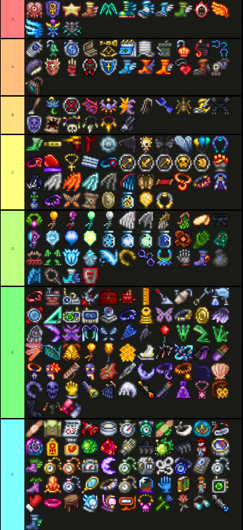
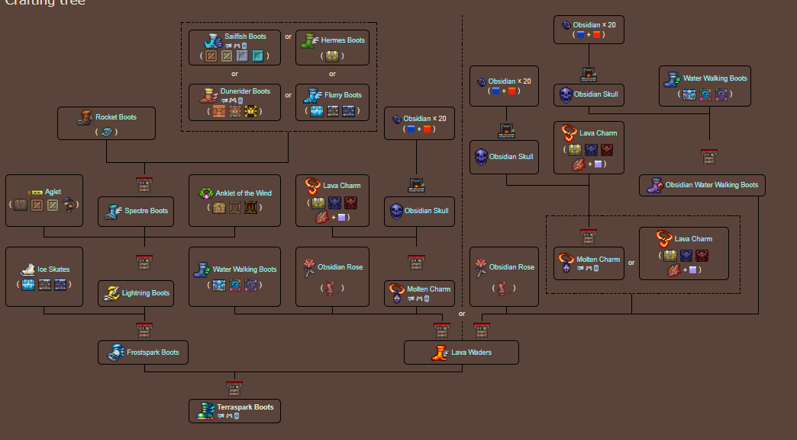

En este apartado de la pagina hablaremos sobre una tierlist de accesorios desde rango S a rango F, siendo S el superior; yo siendo un jugador experimentado, creo esta lista para nuevos jugadores que quieren empezar en terraria y no saben muy bien como equiparse bien o que armas son buenas, este juego es muy Amplio y complejo en lo que a acessorios y armas se basa, no es un juego que de buenas a primeras puedas obtener o aprender todas las cosas.
Vamos a hablar sobre los accesorios mas destacables de la Tier S, donde Podemos excluir la mayoria de alas hechas con luminita y la soltada por el MOON LORD, vamos a centrarnos mas en accesorios que pueden sorprender a los mas experimentado de que esten en este tier, como puede ser las Duneriders, las cuales en mi opinion y con justa razon son una de las mejores botas si tan solo pones un poco de esfuerzo en crear la arena con unos cuantos bloques de arena, Dios estas botas son como tener asfalto iniciando el juego. estas botas son tan buenas que tienen 1.5 veces mas velocidad que las botas terrachispas(terraspark) y ganandole por 1 mph a el asfalto, ¡WOW! incredible verdad?

Crafteo de la terra chispa, Si es gigantesco, en cambio la Duneriders simplemente se encuentran en el desierto.
Como siguiente accesorio quiero hablar sobre el cerebro de confusion el cual es un excelento accesorio y para mi de los mejores accesorios, aunque dependiendo del momoento en el que te encuentres en tu partida pueden haber otras opciones, no mejores opciones, sino otras opciones que puedan sustituir a este accesorio; hablando un poco mas del accesorio tiene 3 caracteristicas, la primera es que al recibir daño todos los enemigos no bosses caminan en sentido contrario al que usualmente van, lo cual estando atrapado esta muy bien, pero la caracteristica principal que lo hace estar en el top de la tier es el hecho de que puedes nullificar absolutamente una instancia de daño adicionalmente dando un los frames de invulnerabilidad, no acaba ahi ademas te da 10% de golpe critico y daño con invocaciones y todas estas cosas tan solo en un slot de accesorio, nose si tenga que explicar mas lo masivamente fuerte que es este objeto y lo temprano que se consigue.
Como mencion honorifica quiero destacar, el escudo de anhk, el cual quita la mayoria de efectos alterados molestos del juego, El escudo de chutulhu el cual no nesesita introduccion, y la insignia de la emperatriz de la luz, la cual da vuelo infinito.